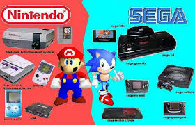
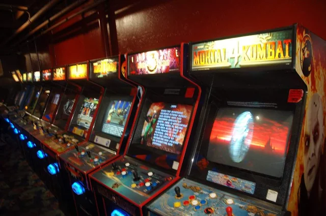

Mario vs Sonic a battle of the mascots!
The Mario vs. Sonic rivalry emerged in the 1990s as a competition between Nintendo's Mario and Sega's Sonic the Hedgehog, symbolizing the battle between the two gaming giants. The rivalry intensified with the release of Super Mario World and Sonic the Hedgehog, each offering distinct gameplay styles—Mario's platforming vs. Sonic's speed. This competition fueled fierce marketing campaigns, with fans passionately supporting one side. Ultimately, the rivalry helped shape the gaming industry, pushing both companies to innovate and leading to the eventual decline of Sega's console dominance.
Arcade machines were at an all time peak!
In the 1990s, arcade machines saw the rise of iconic games that defined the era. Popular titles included Street Fighter II, which revolutionized fighting games, Mortal Kombat for its brutal combat and fatalities, and NBA Jam, known for its over-the-top basketball action. The Simpsons and Teenage Mutant Ninja Turtles also became favorites for their cooperative gameplay. These games, alongside classics like Pac-Man and Donkey Kong, contributed to the golden age of arcade gaming, drawing massive crowds and shaping the gaming culture of the decade.
Many consoles were released for many different companies!

The 1990s saw the release of several iconic gaming consoles that shaped the industry. Nintendo’s Super Nintendo Entertainment System (SNES) and the original Sony PlayStation revolutionized gaming with advanced graphics and new genres. Sega’s Genesis and the Sega Saturn brought fast-paced action games, while the Nintendo 64 introduced 3D gaming with titles like Super Mario 64. The Neo Geo catered to arcade enthusiasts with high-quality games, and the Game Boy continued to dominate handheld gaming. These consoles contributed to the rapid growth of the gaming industry and set the stage for future innovations.